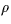
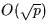
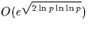
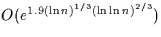
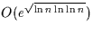

Factoring algorithms come in two flavors, special purpose and general
purpose; the efficiency of the former depends on the unknown factors,
whereas the efficiency of the latter depends on the number to be
factored. Special purpose algorithms are best for factoring numbers
with small factors, but the numbers used for the modulus in the RSA
system do not have any small factors. Therefore, general purpose
factoring algorithms are the more important ones in the context of
cryptographic systems and their security.
Special purpose factoring algorithms include the Pollard

method, with expected running time
, and the Pollard p-1 method, with running time O(p'), where p' is the largest prime factor of p-1. Both of these take an amount of time that is exponential in the size of p, the prime factor that they find; thus these algorithms are too slow for most factoring jobs. The elliptic curve method (ECM) is superior to these; its asymptotic running time is
.The ECM is often used in practice to find factors of randomly generated numbers; it is not strong enough to factor a large RSA modulus.The best general purpose factoring algorithm today is the number field sieve, which runs in time approximately

. It has only recently been implemented, and not yet practical enough to perform the most desired factorizations. Instead, the most widely used general purpose algorithm is the multiple polynomial quadratic sieve (mpqs), which has running time
. The mpqs (and some of its variations) is the only general purpose algorithm that has successfully factored numbers greater than 110 digits; a variation known as ppmpqs has been particularly popular.
It is expected that within a few years the number field sieve will
overtake the mpqs as the most widely used factoring algorithm, as the
size of the numbers being factored increases from about 120 digits,
which is the current threshold of general numbers which can be
factored, to 130 or 140 digits. A ``general number'' is one with no
special form that might make it easier to factor; an RSA modulus is a
general number. Note that a 512-bit number has about 155 digits.
Numbers that have a special form can already be factored up to 155
digits or more. The Cunningham Project keeps track of the
factorizations of numbers with these special forms and maintains a ``10
Most Wanted'' list of desired factorizations. Also, a good way to
survey current factoring capability is to look at recent results of the
RSA Factoring Challenge (see Question 3.4.8).